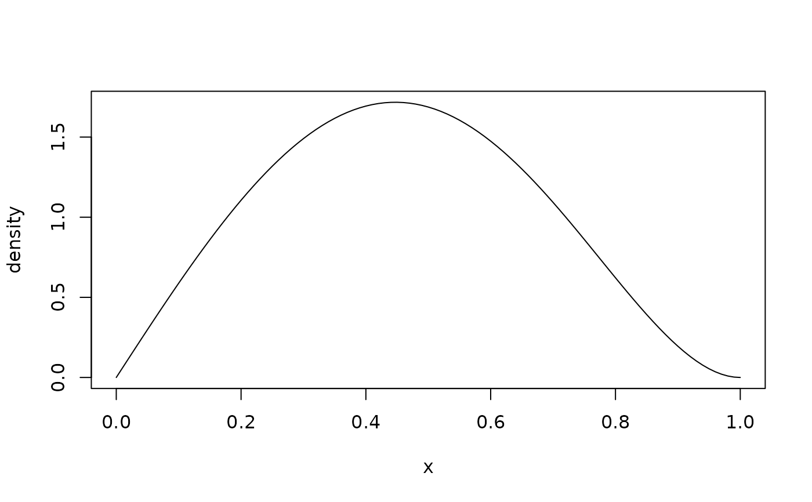

Computes the probability density function (PDF) for the two-parameter
Kumaraswamy (Kw) distribution with shape parameters alpha (\(\alpha\))
and beta (\(\beta\)). This distribution is defined on the interval (0, 1).
Value
A vector of density values (\(f(x)\)) or log-density values
(\(\log(f(x))\)). The length of the result is determined by the recycling
rule applied to the arguments (x, alpha, beta).
Returns 0 (or -Inf if log = TRUE) for x
strictly outside the interval [0, 1]. At the closed boundaries
x = 0 and x = 1 the limiting density is returned rather than
0, following the convention of base R's density functions (compare
dbeta); depending on the parameters that limit is
0, a finite positive value, or Inf.
An out-of-bound or missing parameter is an error, not a return value: the
wrapper stops with a message naming the parameter. An infinite parameter is
not currently intercepted there and reaches the C++ layer, which treats it
as invalid.
Details
The probability density function (PDF) of the Kumaraswamy (Kw) distribution is given by: $$ f(x; \alpha, \beta) = \alpha \beta x^{\alpha-1} (1 - x^\alpha)^{\beta-1} $$ for \(0 < x < 1\), \(\alpha > 0\), and \(\beta > 0\).
The Kumaraswamy distribution is identical to the Generalized Kumaraswamy (GKw)
distribution (dgkw) with parameters \(\gamma = 1\),
\(\delta = 0\), and \(\lambda = 1\). It is also a special case of the
Exponentiated Kumaraswamy (dekw) with \(\lambda = 1\), and
the Kumaraswamy-Kumaraswamy (dkkw) with \(\delta = 0\)
and \(\lambda = 1\).
References
Kumaraswamy, P. (1980). A generalized probability density function for double-bounded random processes. Journal of Hydrology, 46(1-2), 79-88. doi:10.1016/0022-1694(80)90036-0
Jones, M. C. (2009). Kumaraswamy's distribution: A beta-type distribution with some tractability advantages. Statistical Methodology, 6(1), 70-81. doi:10.1016/j.stamet.2008.04.001
Examples
x <- c(0.1, 0.3, 0.5, 0.7, 0.9)
dkw(x, alpha = 2, beta = 3)
#> [1] 0.58806 1.49058 1.68750 1.09242 0.19494
dkw(x, alpha = 2, beta = 3, log = TRUE)
#> [1] -0.53092630 0.39916531 0.52324814 0.08839542 -1.63506346
## Closed form: alpha * beta * x^(alpha - 1) * (1 - x^alpha)^(beta - 1)
all.equal(dkw(x, 2, 3), 2 * 3 * x * (1 - x^2)^2)
#> [1] TRUE
## The density integrates to one
integrate(dkw, 0, 1, alpha = 2, beta = 3, rel.tol = 1e-10)
#> 1 with absolute error < 1.1e-14
curve(dkw(x, alpha = 2, beta = 3), from = 0, to = 1, ylab = "density")
